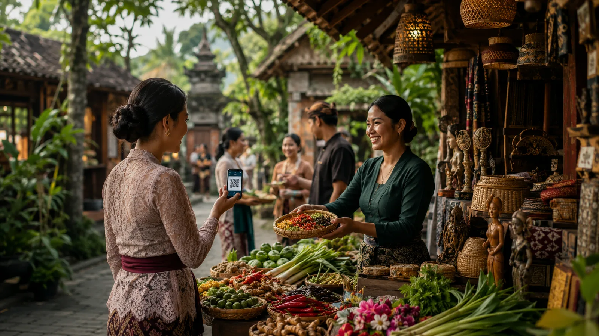

Ecosystem
One platform. Eleven ways in.
Each module is a doorway into food culture. Together they form a single, connected ecosystem.
Program modules
The rooms of the dapur.
Each module carries an Indonesian name that anchors it in Nusantara food culture. Modules are designed to overlap and combine — a Talk can begin at a Table, a Residency can feed the Archive, a Farm can supply the Kitchen.
How they connect
Nothing here works alone.
A seed from the Farm becomes a dish at the Table; the recipe enters the Archive; a Class transmits it; a Residency reimagines it; Food Diplomacy carries it across borders.
KUDAKU is a loop — a living system where taste, knowledge, encounter, creation, and care keep feeding one another.

Bring a module to life with us.
Institutions, producers, and practitioners can co-build any module of the ecosystem.